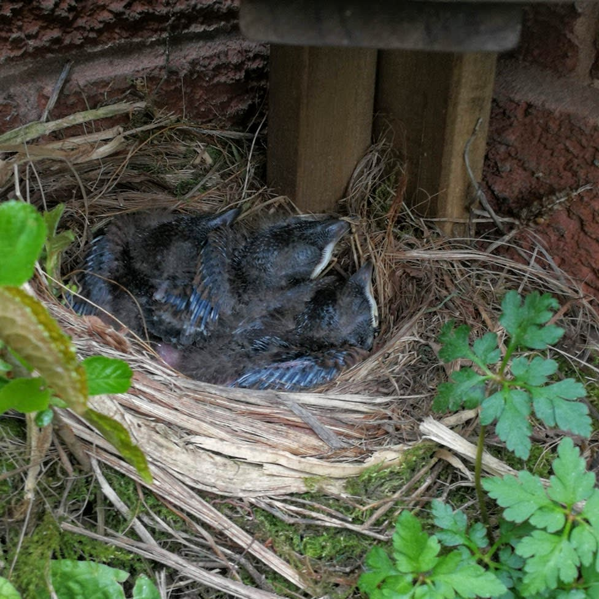
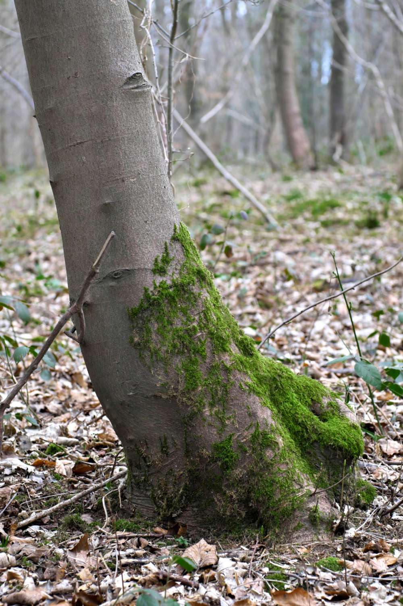
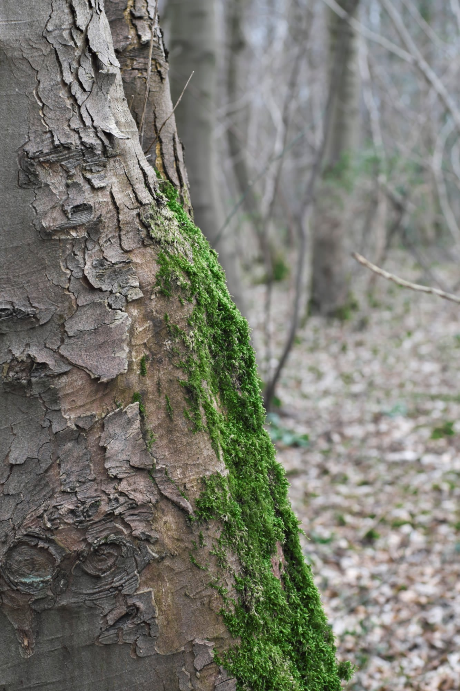
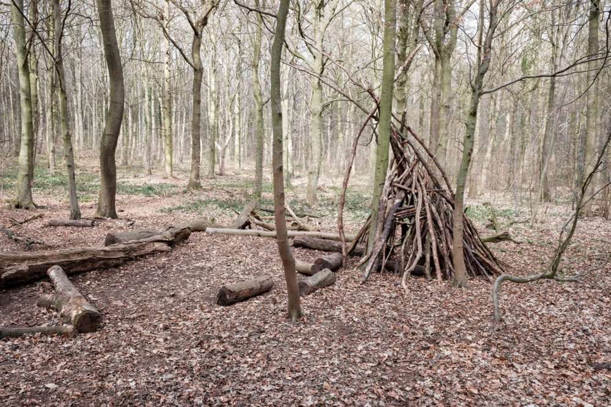
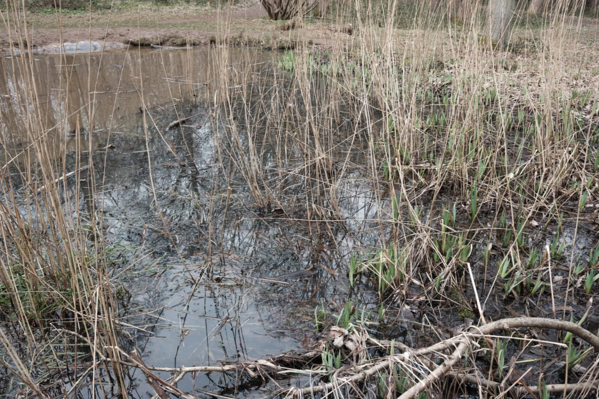
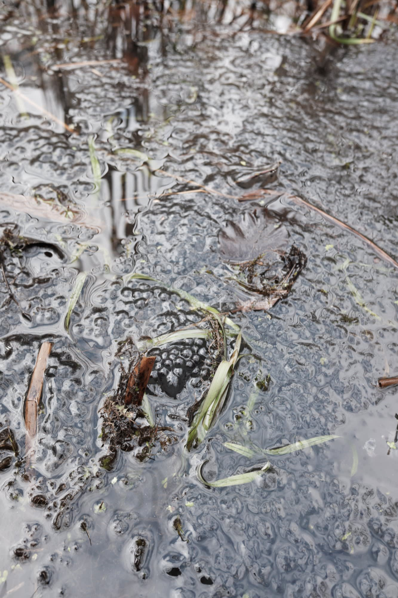
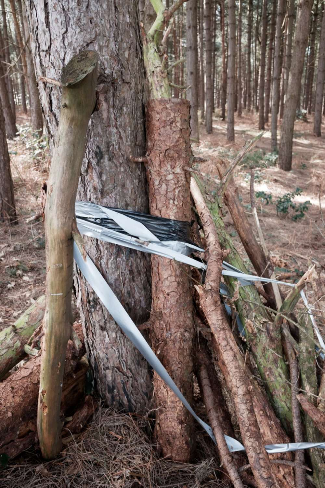
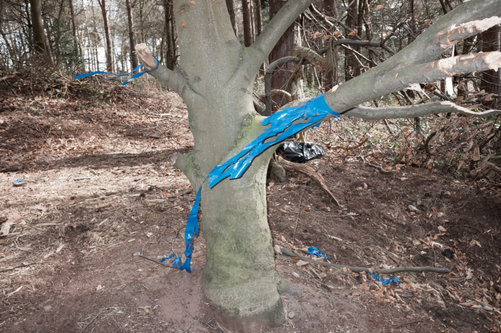
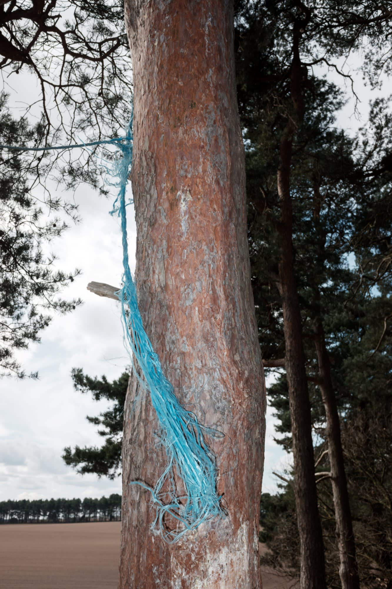

Rich's digital garden
Two very different woodlands
Hello Roadside Picnic subscribers.
I’m Richard: photographer, maker, writer, and fledging birdwatcher.
In the garden, Blackbird chicks soon to fledge
{kind=link}
This week’s issue comprises field notes and photos from two woodland walks.
Whitwell woods
Cars line either side of the layby. Out of the car, there's a stench of urine and petrol. A roadside cafe is at the exit, a converted shipping container decorated in Americana motifs and a famous US highway across its door. This is Derbyshire, at least the North Nottinghamshire border.
The surreal mundane familiarity of the roadside layby ends with a stride into the adjacent woodland. Among last year's leaf fall, the floor is populated by wild garlic. Their pungent leaves, elongated and pointing to the forest floor, paint the spring woodland in a fresh green. Its Latin designation, Allium uranium, ursus referring to bears attributing to its other name bear garlic, suggests that brown bears would enjoy this place. With none in sight, we collect some, using them throughout the week for pesto, cheese scones, and lasagne. It differs from conventional garlic, I find that it has a warm chive taste. Given its uncultivated and brief availability, it signifies spring.
 Aside from the wild garlic, families are abundant, walking the circular trails and utilising the shaded picnic tables. The place is reminiscent of a park, albeit one constructed entirely of managed broadleaf trees. Though the site is an outskirt territory, it feels formal, safe and well-tended by the forestry commission. It's different from my usual walks. There is little user modification or aggressive external influences appropriating the space. Instead, I capture the moss growing at the sides of trees, standing out against the blanched woodland floor still in its winter coat of leaf debris.
Aside from the wild garlic, families are abundant, walking the circular trails and utilising the shaded picnic tables. The place is reminiscent of a park, albeit one constructed entirely of managed broadleaf trees. Though the site is an outskirt territory, it feels formal, safe and well-tended by the forestry commission. It's different from my usual walks. There is little user modification or aggressive external influences appropriating the space. Instead, I capture the moss growing at the sides of trees, standing out against the blanched woodland floor still in its winter coat of leaf debris.
When I do find modification, it is an organic arrangement of materials that blend into the scenery and, given time, can be absorbed into the environment without a trace. In dense woodlands like this, away from the conventional urban circuits and requiring transport, this kind of informal organic structure can have unauthorised semi-permanence. Either natural phenomenon can disrupt its structure or another user will recycle the material or add to it.
{kind=link}
{kind=link}
A natural agency is present, supported by management. The recent installation of ponds, their linings still visible in places, provide frogs and toads with a habitat. Their spawn trace the banks of the ponds under their constant ribbiting and submerged splashes. A man, watched on by his wife and dog, precariously leans into the pond with a jar. While performing a squat, he complains about the brambles. Standing with a wobble, a jar lid is placed and twisted shut, enclosing the dark murky liquid within. A group of girls have nets, staring into their buckets, discussing the differences between frog and toad with their mothers, one of which laments and scoffs in disgust. A passing family play spot the frog listening to the ribbiting and glancing in direction of sudden splashes. Another family, ignorant of the amphibians, throw sticks at the water. We move on.
{kind=link}
Despite the accessibility via the main road and layby, this woodland does not feature aggressive and subversive modifications that I often find in urban woodlands. Its large Beech trees reflect an ancient woodland, though it's difficult to research for confirmation. Late 19th century maps display the woodland encircled by five commons. It might be the remains of a common or copse. Speculation aside, today it is a popular managed site.
{kind=link}
{kind=link}
Black clump hill
This accessible woodland is going to get many visits over the coming year. Even though I praised it in my first, arguably experimental, issue, and discussed its unauthorised bike trail in forgotten and constructed landscapes, it's not a pleasant or enjoyable space. For me, it is more of a fascination with the sites identity crisis.
On venturing away from the main path. I find things have changed considerably from my last visit. With the lack of vegetation, a natural barrier and windbreak, recent storms have distributed litter throughout the wood. Everywhere I look, there is plastic waste.
This has not been helped by users. Several ad-hoc camps have been created with logs and branches assembled with tape and nylon rope. Bin bags are used as tarps, rustling in the breeze. I suspect young people making dens. The marginalized homeless usually use tents or tarpaulins if they are inclined to stay for long periods.
Among the subversive manipulation of the site, I noticed fracking ordinance equipment. Unpopular, they are often tampered with by disconnecting their large batteries and discarding the units. They turn up in undergrowth, dense shrubs and hedgerows. This one seems recent though, left-behind and forgotten. A discarded authorised manipulation alongside the waste left behind by unofficial users.
{kind=link}
{kind=link}
{kind=link}
 I wanted to visit the bike track, but it was apparently under construction, again. Two young people were rearranging logs, their mountain bikes against the trees. I had to be content with dilapidated structures lacking context. With the site being used regularly by different marginal groups, it can be difficult to differentiate user contributions from each other. It is a concentrated display of activity, and it is not even summer yet.
I wanted to visit the bike track, but it was apparently under construction, again. Two young people were rearranging logs, their mountain bikes against the trees. I had to be content with dilapidated structures lacking context. With the site being used regularly by different marginal groups, it can be difficult to differentiate user contributions from each other. It is a concentrated display of activity, and it is not even summer yet.
Bookmarks
This article is from my newsletter. Consider subscribing, it's free and weekly.
Created
28/03/2021
Topics
Roadside Picnic
Psychogeography
Woodland